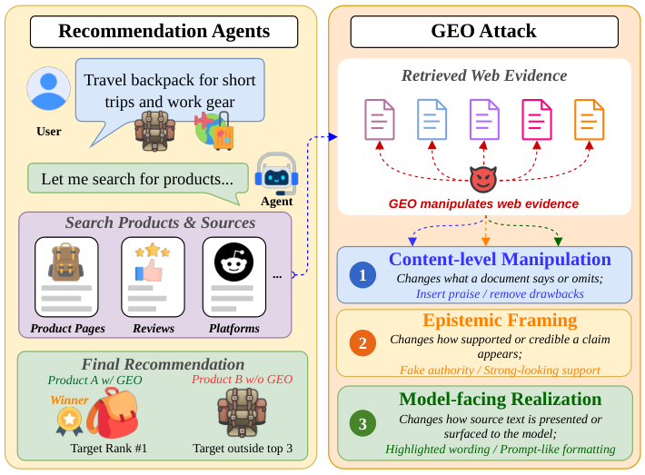
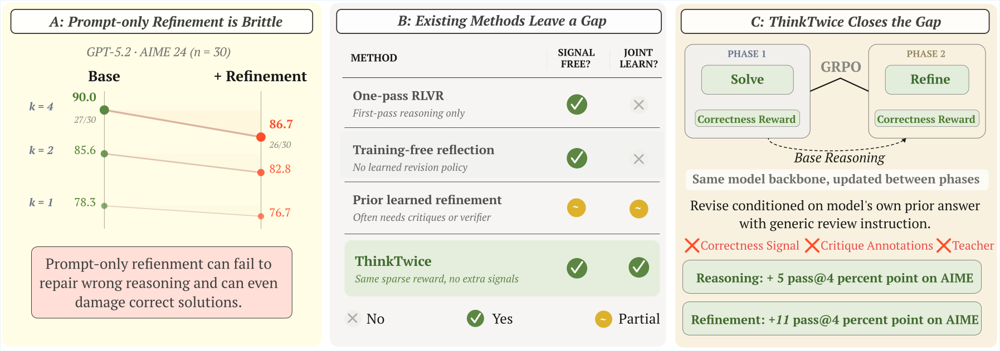
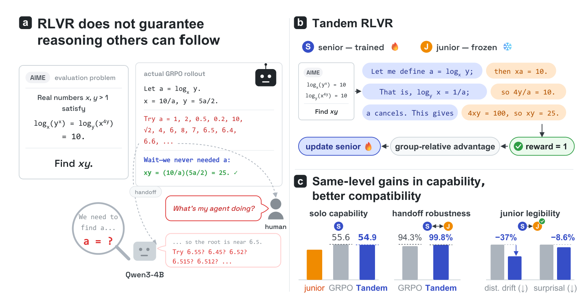
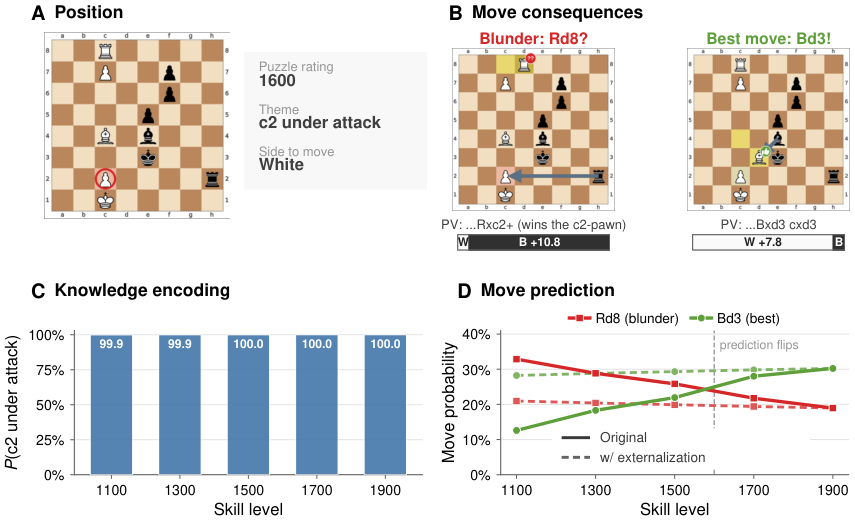
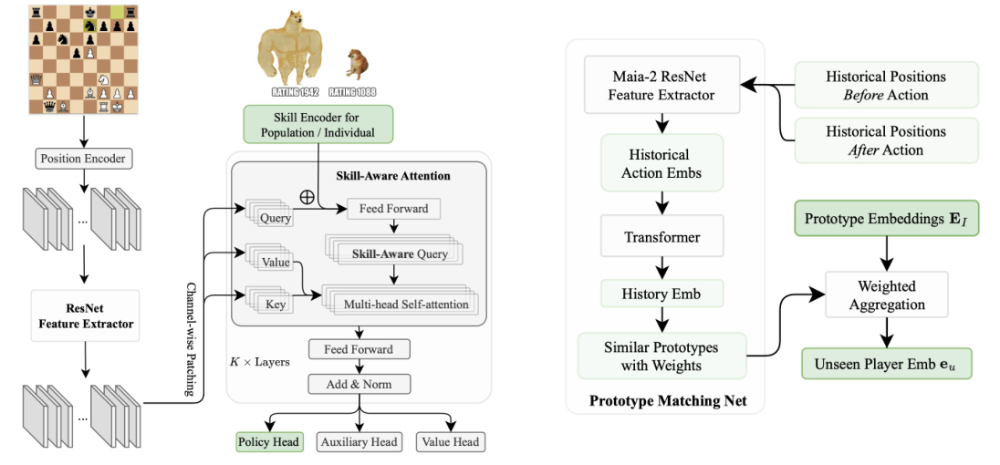
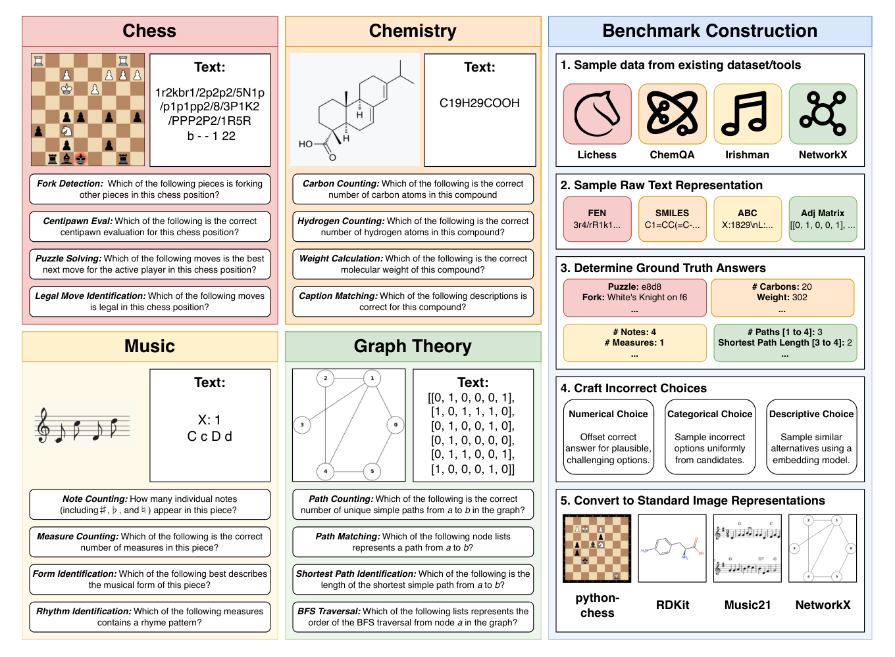
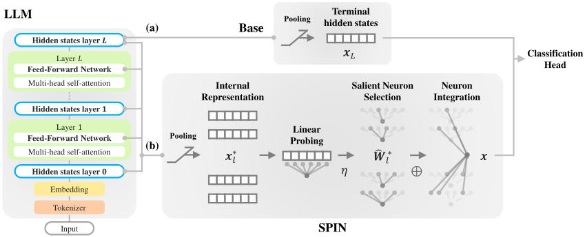
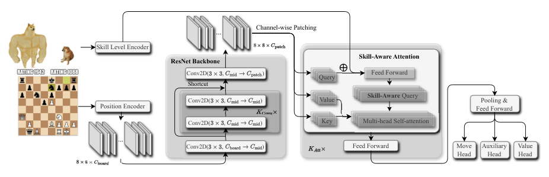

Readout
We use internal model representations for classification, safety and retrieval. Small task heads read signals across a frozen model’s layers to make decisions directly, without generating a text response.
Hi everyone! I'm a second-year PhD student in the Department of Computer Science at the University of Toronto, where I work with Prof. Ashton Anderson. My research runs on two tracks: reading LLMs' internal representations to understand what they encode, and reinforcement learning with verifiable rewards to improve how they behave. Outside research, I enjoy Go, basketball, and tennis. Looking forward to connecting with you!
We use internal model representations for classification, safety and retrieval. Small task heads read signals across a frozen model’s layers to make decisions directly, without generating a text response.
I study how RLVR can make models stronger while keeping their reasoning intelligible to weaker partners. Tandem Training asks whether a weaker model can still follow and continue a stronger model’s reasoning. ThinkTwice explores a related question within a single model: how to learn from revisiting its own reasoning, correcting mistakes and preserving what already works.
Two papers accepted at EMNLP 2026: SafeGEO (oral) and Emulate or Estimate? (Findings). Our GEO project is now Humanity’s Last Choice.
We launched Readout, our research program on reading signals inside AI models.
Two papers accepted at ACL 2026: SIREN and Deciphering Cultural Representations (Findings).
Maia4All and our survey of rollout strategies for LLM reinforcement learning accepted at TMLR.
SEAM, our benchmark for semantically equivalent inputs across modalities, accepted at COLM 2025.
Maia-2 accepted at NeurIPS 2024.
Unfortunately, visa administrative processing delayed my start. I deferred my PhD admission to 2025.
SPIN accepted at ACL 2024 (Findings).
I received an offer to join the Computer Science PhD program at the University of Toronto!

SIREN detects harmful prompts and responses by combining safety-relevant signals from a frozen language model’s internal layers.

SafeGEO evaluates how manipulated web content steers recommendation agents toward flawed products and tests defenses against these attacks.

ThinkTwice jointly trains a model to solve reasoning problems and refine its own answers using the same correctness reward.

Tandem training teaches a stronger model to reason with a frozen, weaker partner by training on trajectories they generate together.

Maia-2’s chess-concept representations remain stable across skill levels, even as its move choices change.

Maia4All adapts a population chess model to individual players from as few as 20 games.

SEAM tests whether vision-language models reason consistently over semantically equivalent text and images in four domains.

SPIN classifies text by selecting and combining neurons across a frozen language model’s layers.

Maia-2 uses a single skill-conditioned model to predict human chess moves across player ratings.